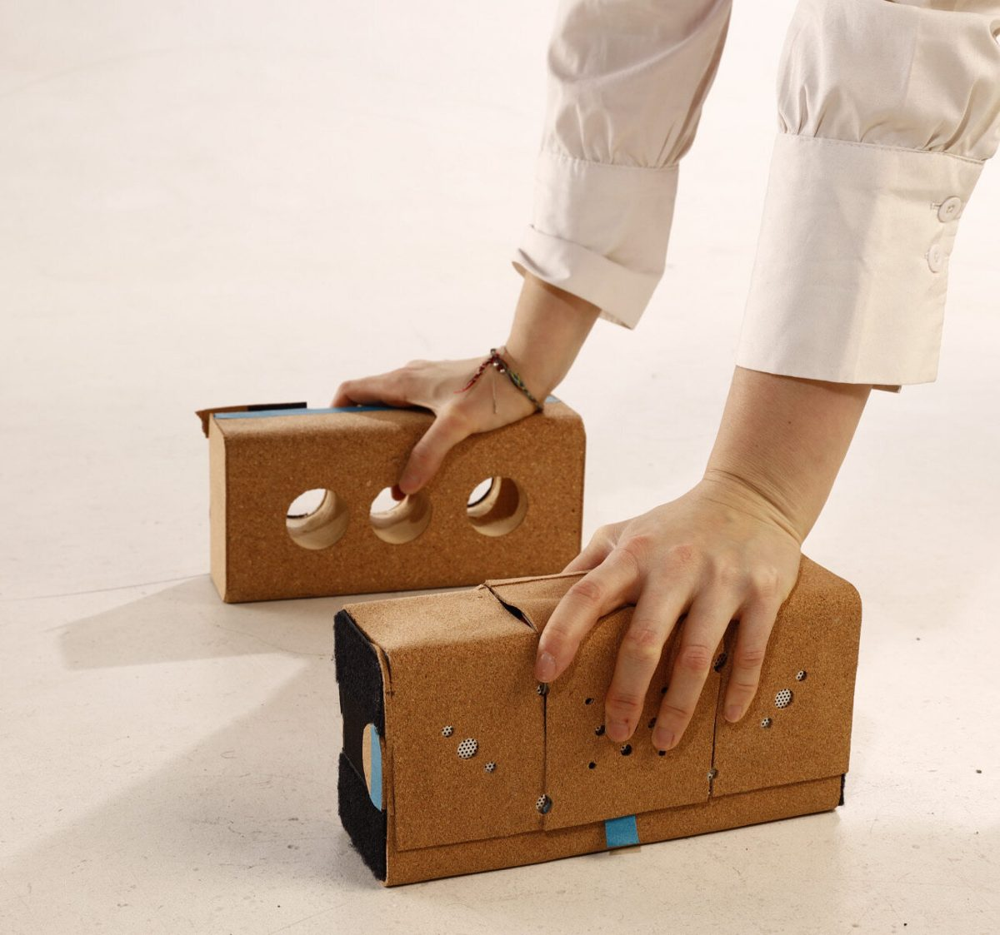
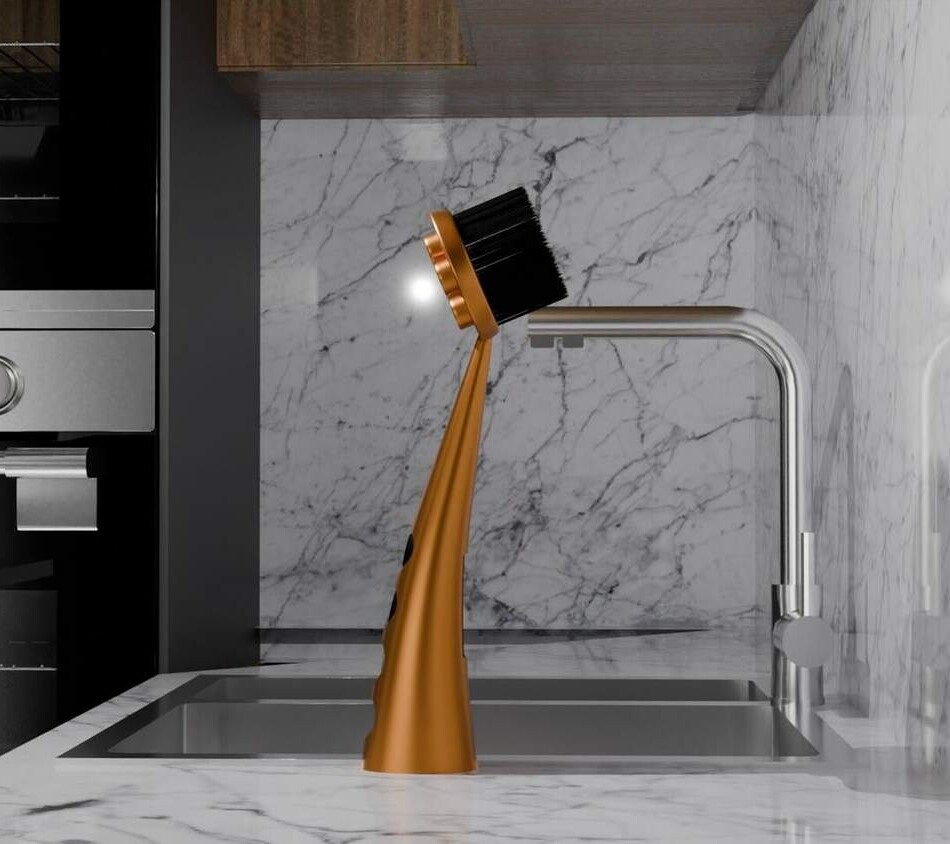
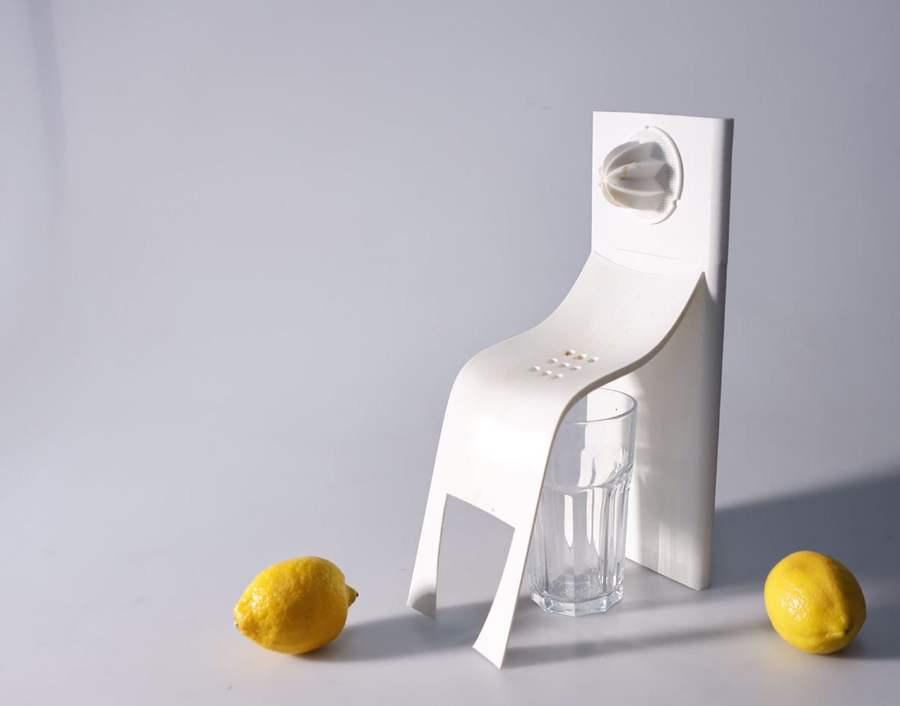

Scorp.ion
Electric moped powered by the tram line
Industrial Design Portfolio
Industrial design student at HTW Berlin. Transportation, product and the space between business and form.

01 / Selected work
Electric moped powered by the tram line

Gravity racer from steel only · SFSU

User-centred product design · SFSU

Cork, wood & sound · Product design

Modular dish brush · Product design

Full-scale tape rendering & car sketches
Further explorations

Lemon press for bars · Product design

Organic joint for beech rods · Computational design

Bruxism add-on for in-ears · Charité

Repairability analysis · Sustainable Design 2